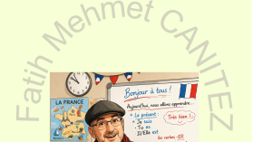

FRANSIZCA A1Dersleri görmek için bir üniteye dokunun. Her ünitenin sonunda genel tekrar vardır.
Bu ünitede selamlaşmayı, kendini tanıtmayı, sayıları, yaş söylemeyi ve "olmak" fiilini (être) öğreniyoruz. Dersleri sırayla izleyin: her derste önce konuyu Türkçe anlar, videoyu izler, kartlara tıklayıp dinler ve etkinlikle denersiniz. Son ders genel tekrardır.
Bu ünitede sınıf eşyalarını (un/une), renkleri, haftanın günlerini, okul mekânlarını ve okulda bulunan kişileri öğreniyoruz.
Bu ünitede ailemizi tanıtmayı, evimizin odalarını ve eşyalarını söylemeyi, bir şeyin nerede olduğunu anlatmayı öğreniyoruz.
Bu ünitede vücut bölümlerini, görünüşümüzü (saç, göz, boy) ve nasıl olduğumuzu (üzgün, hasta, mutlu) söylemeyi öğreniyoruz.
Bu ünitede günün öğünlerini, yiyecek ve içecekleri, sofra eşyalarını, sevdiklerimizi ve tercihlerimizi söylemeyi öğreniyoruz.
Bu ünitede hava durumunu, mevsimleri, kıyafetleri ve ulaşım araçlarını öğreniyoruz.
Fransızca diyalog ve telaffuz videoları ile dinleme ve tekrar çalışmaları.
Soru, öneri ya da düzeltme için yazabilirsiniz.
💬 WhatsApp ile Mesaj Gönder ✉️ fmemo75@gmail.com 📞 0505 446 67 60Sesler tarayıcınızın Fransızca sesiyle çalar.
© Fatih Mehmet CANITEZ · Fransızca A1